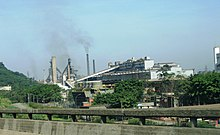
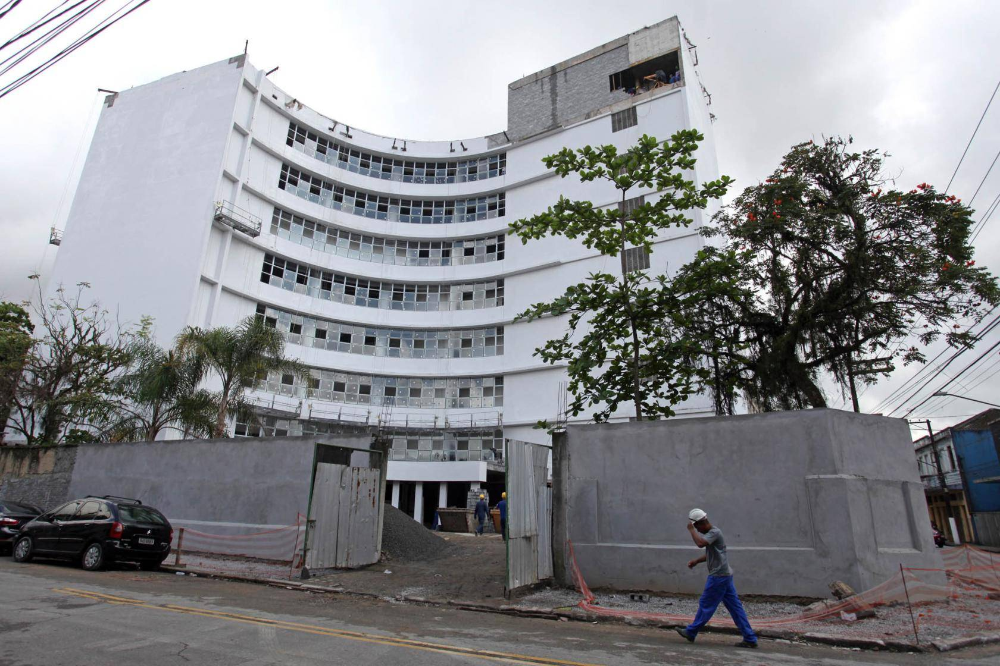
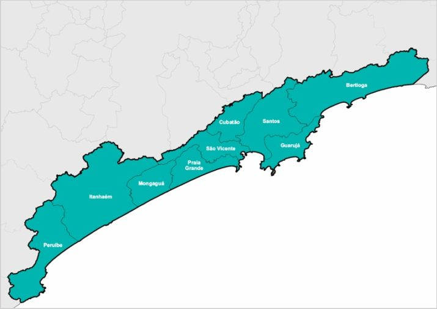

ORIGEM
A Região Metropolitana da Baixada Santista foi criada mediante Lei Complementar Estadual 815, em 30 de julho de 1996, tornando-se a primeira região metropolitana brasileira sem status de capital estadual. Estende-se sobre municípios pertencentes tanto à Mesorregião de Santos (sobreposta à Microrregião de Santos) quanto à Mesorregião do Litoral Sul Paulista (mais precisamente, à Microrregião de Itanhaém). Todos os municípios da Região Metropolitana integram o litoral de São Paulo. A região abrange 2 419,930 quilômetros quadrados (corresponde a menos de 1% da superfície do estado de São Paulo). É a 17ª região metropolitana mais populosa do Brasil, com uma população de cerca de 1,8 milhão de moradores fixos, e faz parte do Complexo Metropolitano Expandido, uma megalópole que compreende 12% da população brasileira, ou cerca de 30 milhões de habitantes. Nos períodos de férias, acolhe igual número de pessoas, que se instalam na quase totalidade em seus municípios.
ASPECTOS ECONÔMICOS
A região caracteriza-se pela grande diversidade de funções presentes nos municípios que a compõem. Além de contar com o parque industrial de Cubatão e o Complexo Portuário de Santos, ela desempenha outras funções de em nível estadual, como as atividades industrial e de turismo, e outras de abrangência regional, como as relativas aos comércios atacadista e varejista, ao atendimento à saúde, educação, transporte e sistema financeiro. Têm presença marcante ainda na região as atividades de suporte ao comércio de exportação, originadas pela proximidade do complexo portuário.
Com aproximadamente 13 km de cais, quase 500 mil m² de armazéns, o Porto de Santos, maior e mais importante complexo portuário da América do Sul, movimenta anualmente 76 milhões de toneladas, entre carga geral, líquidos e sólidos a granel e mais de 40% do movimento nacional de contêineres, ou seja, de cada cinco contêineres embarcados ou desembarcados na costa brasileira, dois passam pelo Porto de Santos. Para o Estado de São Paulo, a presença do Porto representa enorme avanço econômico, permitindo o direcionamento de grande parcela de suas atividades industriais e agrícolas para o suprimento de mercados internacionais.
As atividades industriais, localizadas predominantemente em Cubatão, importante polo siderúrgico em escala regional, assim como as portuárias em Santos e as ligadas ao comércio, serviços e atividades de turismo e veraneio têm reflexos diretos na economia da região e respondem pela geração de um Produto Interno Bruto de R$ 52,3 bilhões (Seade/2011), o que representa 3,88% do PIB do estado de São Paulo.
O turismo também tem grande participação no PIB da região, quesito que inclui todas as cidades da Região Metropolitana, tendo para vários atrativos naturais e culturais. Com a Camada pré-sal situada na Bacia de Santos o PIB da região tende a aumentar gradativamente de forma robusta.


PARQUE TECNOLÓGICO
O parque da Baixada Santista ficará localizado entre os bairros do Valongo e Vila Mathias e será voltado às áreas de petróleo, gás natural, porto, tecnologia da informação, meio ambiente e logística. As empresas que já manifestaram interesse em fazer parte do empreendimento são a Petrobrás, a Usiminas e iniciativas especializadas em TI.
A prefeitura de Santos (SP) estima investimento inicial de R$ 50 milhões nas obras das duas unidades-âncora do futuro parque tecnológico de Santos, que atenderá sobretudo a cadeia de petróleo e gás da Bacia de Santos. São elas um núcleo do Centro de Pesquisas (Cenpes) da Petrobras e a própria sede do parque tecnológico. Para o entorno dessas duas instalações serão atraídas as empresas fornecedoras da operação de exploração e produção de óleo e gás.

ASPECTOS DEMOGRÁFICOS
O crescimento exacerbado em Santos, Cubatão e Guarujá, aliado a outras atividades geradoras de emprego nos setores de comércio e serviços, provocou um movimento altamente pendular em direção a outros municípios, com melhores condições de habitabilidade e espaço disponível.
Os municípios de São Vicente e Praia Grande e o distrito de Vicente de Carvalho, no Guarujá, adquiriram características de cidades-dormitório, apresentando intensa conurbação entre si, só prejudicada pela presença de restrições de ordem física, que os impedem, aqui e ali, de apresentar uma mancha urbana contínua. Apesar da sua função portuária, importante para um crescente intercâmbio em face do processo de globalização, e de constituir sede do expressivo pólo siderúrgico e da indústria de turismo, a RMBS apresenta problemas comuns aos grandes aglomerados urbanos, como os relacionados com a questão ambiental, carência de infraestrutura, saneamento ambiental, transporte e habitação.

FEITO POR:
Eric Sandes: Pagina inicial e Bertioga
Miguel Santana: Cubatão e Mongaguá
Alyson Gabriel: Peruibe e Praia Grande
Pedro Baum: Guarujá e Itanhaém
Pedro Artin: Santos e São Vicente